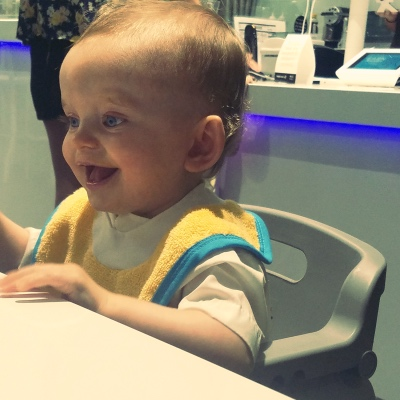

How do I use technology without going overboard?
That's a fair question, considering I spend a minimum of eight hours a day on my computer while in school, which is now at the halfway point of completion. It is insane how quickly the time has flown by. It seems like yesterday I had no idea what a foreach loop was and now I'm iterating through arrays in my sleep. In these last eight weeks, I've learned to look at technology in a completely different perspective. Before Codeup, I used my phone and computer for simple tasks: talking, texting, scrolling through Pinterest, and taking pictures of my son.
Can you blame me?
Anyways, now I habitually check the Google Playstore, for different apps that can be useful to me on a daily basis. How can I jot down a to-do list that pops in my head in a way that I'll actually be motivated to complete it without forgetting? How can I utilize time otherwise wasted driving through rush-hour traffic both ways to school? (Aside from yelling at crazy drivers.) How can I streamline my average, day-to-day muting of my phone so no one has to hear my ringtone in class? (Apparently not everyone loves Taylor Swift as much as me.) How can I avoid excess time wasted on Pinterest? (There is NO way I'm the only one in this boat.)
My goal here was to find apps that not only didn't require me to spend an hour inputting user information in order for it to work the way I wanted to but also would work on my behalf so I wouldn't have to waste time on mindless tasks (i.e. muting my phone and forgetting to turn it back on but also vice versa.) Here are my favorites:
IFTTT (phone): If This, Then That. You can create your own 'recipes' or use pre-made ones to streamline the simple tasks you don't want to waste time doing yourself. Remember that Twitter profile picture from 2010 you keep meaning to change but always forget? There's a recipe to sync your Facebook and Twitter profile pictures so you don't have to worry about potential employers seeing you at that party. You know the one I'm talking about. All it requires is your login info from both sites. Want to mute your phone when you get to work? There's a recipe where all you do is input your work location and it does the work for you. Want your loved one to know you've left the office but you don't want to text and drive? There's a recipe for that too.
Google Drive (phone and computer): Google is essentially my life now. I have a Samsung Galaxy phone and pretty much everything is tied to my Google account. I am a writer on the side but because I'm in school all day (I leave at 7am, drop my son off and go straight to school, leave at 5:30, pick him up and get home by 7pm) I feel bad if I don't spend the time after that with Declan and my husband when he wakes up (he works nights). Once I get Declan to sleep, it's hit or miss if I'm even awake still. Thus, my writing time takes a hit. Remember how I said I wanted to utilize the huge amount of wasted time on my way to and from school? Google Drive to the rescue! I set my phone up in my cupholder and just make voice memos as I drive and once I get to my destination, I save them and upload them to Google Drive. On my lunch breaks, I transcribe them on my computer (and try not to accidentally include road rage snippets into my scenes) and add to the scenes if I have time. I've honestly written more in the last eight weeks than in the last year, all because I have nothing else to do in the car besides belting out hilariously off-key renditions of Taylor Swift songs.
Mindly (phone): I hate generic checklists. I really do. My lists are not so simple. My husband tried to understand how my brain works by drawing it out on a whiteboard….he ran out of space with all the dynamically changing lists and tasks I wanted to do in one day. Cue Mindly. I make a diagram of the different types of tasks, broken down by location and what time of day to do them. I map out my day so I know exactly what, when and where tasks need to get done so nothing gets forgotten.
Trello (phone and computer): I use Trello like an interactive Pinterest board. I make boards for my projects and include the tasks that need to get done, along with mockups and templates of how I want it to look but it lets me add notes and it's not just a board I stare at and wonder when I'll actually find time to work on it. I can work straight from the app to sketch out ideas while I'm on the go (I'm almost always on the go when I'm not in class), save my progress and continue working on the actual project and incorporate those ideas when I can work on my computer.
The great thing about familiarizing myself with these apps and trying so many new ones on a regular basis is that, while I love when I find something useful, it's even better when I can't find what I want because that means I can make it myself and design it to be exactly what I want. I've been fortunate enough to find these apps and others to help me work much more efficiently so that I can spend my time creating the programs I want to see and use. I love that even when I'm not at my computer, I can still work on projects, ideas and keep track of my progress and not have to worry about wasting time on car rides or waiting in a long line somewhere (unless I'm on Pinterest). So while I still use my phone for basic functions, it has now become a powerful tool of productivity that helps me surpass previous time constraints and limitations.
I'm not tied to my computer but I'm also not a slave to my cellphone. It's a liberating feeling. I can focus fully on my family for the few hours I get with them a day and still feel productive knowing I maximized the rest of my day.
-Ashley
Back